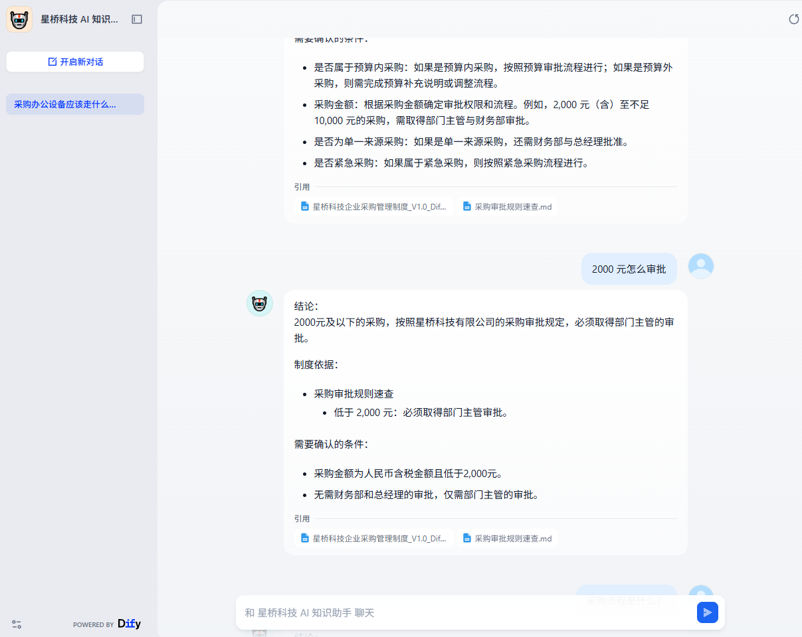
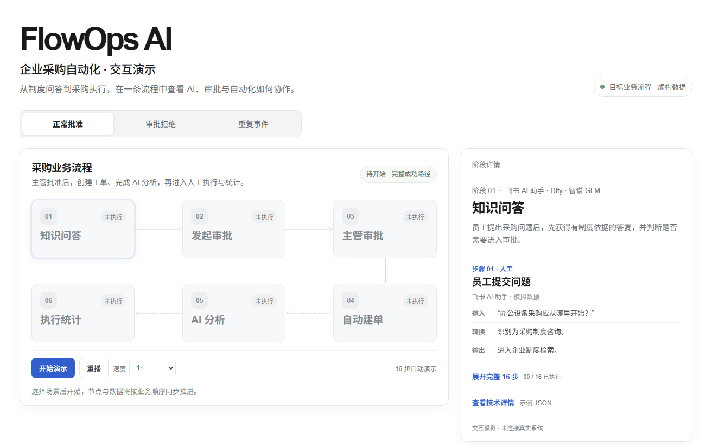
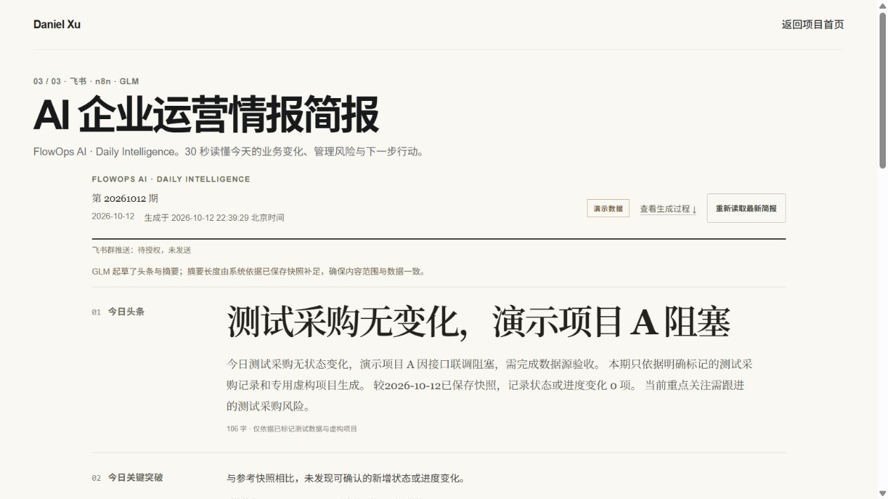

01 / Enterprise knowledge
企业 AI
知识库助手
飞书Dify智谱 GLM
员工用自然语言查询企业制度与采购规则，系统依据检索到的知识内容组织回答并提供引用。
- 检索企业制度，回答保留来源线索。
- 支持采购问题查询与办理指引。
- 问答独立运行，不直接触发真实审批。
Loading Systems...
Independent product maker
I build products with AI.
Selected work · FlowOps AI
把企业知识、审批流程与日常运营信息放进清晰可追溯的工作链路。

01 / Enterprise knowledge
员工用自然语言查询企业制度与采购规则，系统依据检索到的知识内容组织回答并提供引用。

02 / Approval automation
展示从知识问答、员工申请、主管审批到采购建单、AI 辅助分析与人工执行的流程设计。

03 / Daily intelligence
将已保存的运营快照整理为头条、关键变化、管理风险与优先行动，并保留历史比较和数据依据。
Featured Project 01
Personal AI Workspace
ProblemProjects, GitHub, tasks, reference material, and AI conversations live in separate places.
SolutionA single personal AI Workspace that brings the work and its context together.
Projects, tasks, knowledge and decisions in one place.
Workspace context
AI Assistant Mock
Page-aware responses using the current workspace context.
CapabilitiesProjects · Tasks · Knowledge · Decisions · AI Assistant · GitHub status · Light / Dark mode
Featured Project 02
An AI + Automation workflow that turns selected sources into useful, platform-ready content.
Collect signal from chosen sources.
Keep what is relevant and useful.
Find themes and key ideas.
Shape each idea for its audience.
Prepare one idea for many channels.
Small ideas, shipped
A growing collection
A Pomodoro timer with tasks, session stats, ambient sound and optional cloud sync.
A pass-around Werewords helper with a day timer, secret-word peeks and settlement timer.
A party-game helper for drawing prompts, hidden scoring criteria and round settlement.
A pass-the-phone Spyfall game with hidden roles, locations and an 8-minute round timer.
Choose from your own options, pick a meal or draw a random number.
A shared virtual cat where visitors feed Lanlan and update cloud-synced records.
How I Work
A short feedback loop
Have an idea?
AI products, automation and fast prototyping.